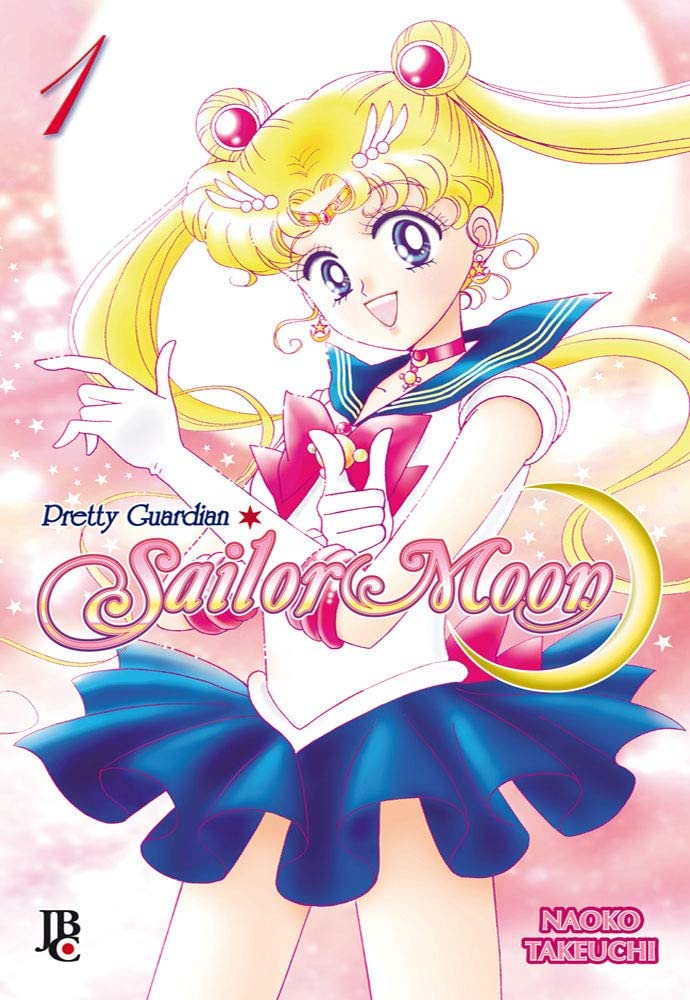

Usagi é uma ginasial de 14 anos. Como muitas meninas de sua idade, é desastrada, distraída e um tanto preguiçosa. Em um encontro, aparentemente ao acaso, a jovem acaba conhecendo uma gatinha falante e, através dela, descobre ser dona de incríveis poderes. Por conta disso, acaba recebendo uma grande missão! Agora ela terá de encontrar suas companheiras, descobrir se o mascarado que ela acha lindo é amigo ou inimigo e proteger uma princesa, mas nada disso é tão difícil para ela do que acordar cedo para ir para a escola! Será que ela consegue? AUTOR: Naoko,Takeuchi No. PÁGINAS: 206